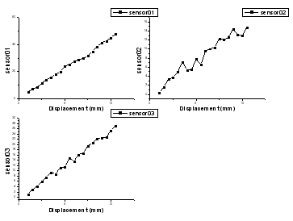
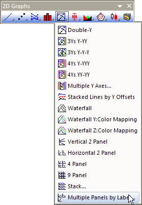
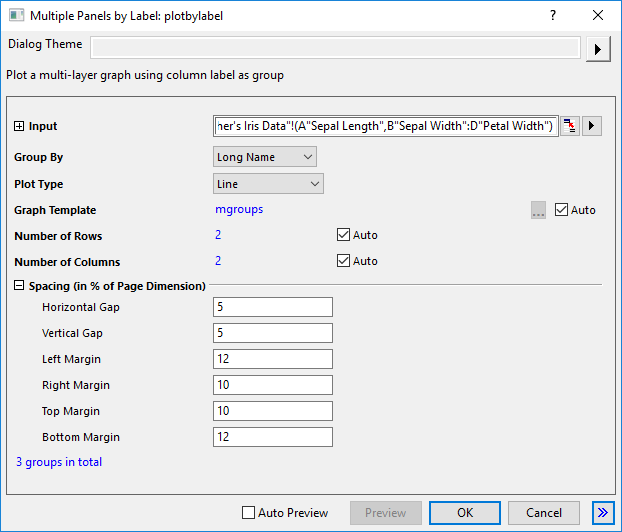
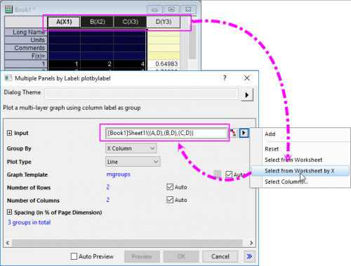

Mehrere Felder nach Beschriftung
MultiPanel-Graph
- 
Datenanforderungen
Wählen Sie mindestens eine Y-Datenspalte (oder einen Bereich aus mindestens einer Spalte) aus. Für jede Y-Spalte stellt die X-Spalte die X-Werte bereit, wenn es eine verbundene X-Spalte gibt; ansonsten wird ein Abtastintervall der Y-Spalte oder Zeilennummer verwendet.
Diagramm erstellen
Wählen Sie die erforderlichen Daten aus
Wählen Sie .
oder
Klicken Sie auf die Schaltfläche Mehrfach mit Beschriftung auf der Symbolleiste 2D Grafiken.
- 
Hierdurch öffnet sich der Dialog plotbylabel.
- 
Legen Sie die Angaben für Gruppe nach, Diagrammtyp, Diagrammvorlage, Anordnung der Felder und Abstände zwischen den Feldern für die ausgewählten Datensätze fest. Klicken Sie auf OK, um das Diagramm zu erzeugen. Weitere Einzelheiten zu diesem Dialog finden Sie auf dieser Seite.
Vorlage
MGROUPS.OTPU (installiert im Origin-Programmordner).
Hinweise
- Seit Origin 2022 können Sie, wenn Sie mehrere aufeinanderfolgende X-Spalten und dann eine anschließende Y-Spalte haben wie in XXXY, die Option Aus Arbeitsblatt nach X auswählen im Ausklappmenü auswählen, um mehrere XY-Bereiche als Eingabe auszuwählen.
- 
- Das Diagramm mit mehreren Feldern nach Beschriftung enthält mehrere Layer. Die Anzahl der Layer wird von der Anzahl der Gruppen der Eingabedaten bestimmt. Die Eingabedaten werden entsprechend der Spaltenbeschriftungszeile oder X-Spalten gruppiert, die für den Gruppe nach gewählt wurden.
- Ab Origin 2018b können Sie die Bedienelemente Allgemeine Anzeige des Dialogs Details Zeichnung für die gleichzeitige Bearbeitung von Layer-, Zeichnungs- und Achseneigenschaften in einer Grafik mit mehreren Layern verwenden. Weitere Informationen finden Sie unter Bedienelemente der Registerkarte Layer im Dialog Details Zeichnung.
- Seit Origin 2021b können Sie eine Diagrammvorlage festlegen, indem Sie das Bedienelement Diagrammvorlage verwenden, um die mit der Vorlage gespeicherten Formate auf die Felder anzuwenden. Standardmäßig wird die Standardvorlage mgroups.optu für die Felder verwendet.